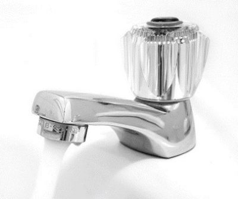
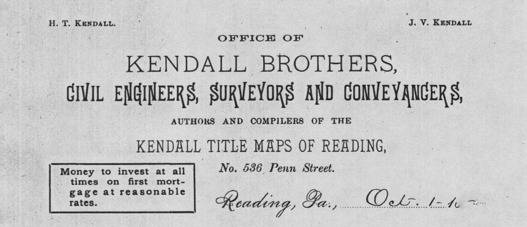
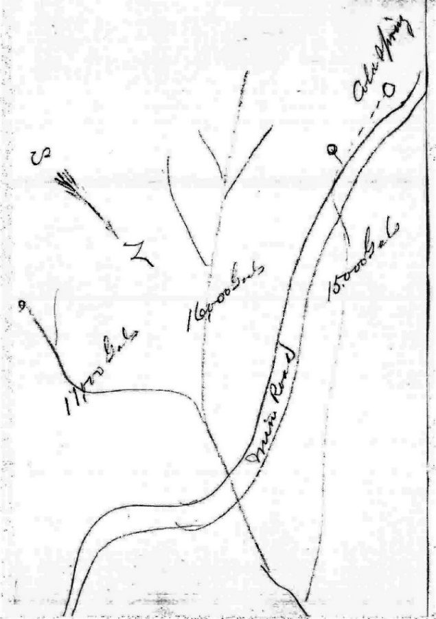
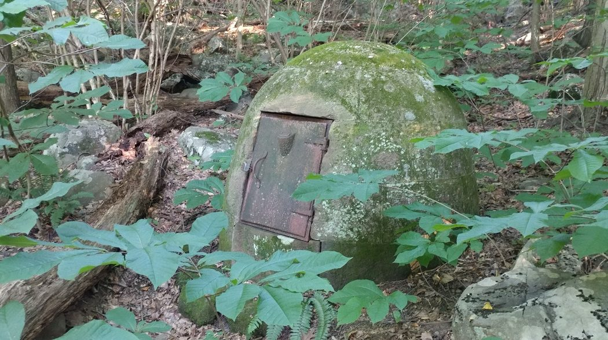
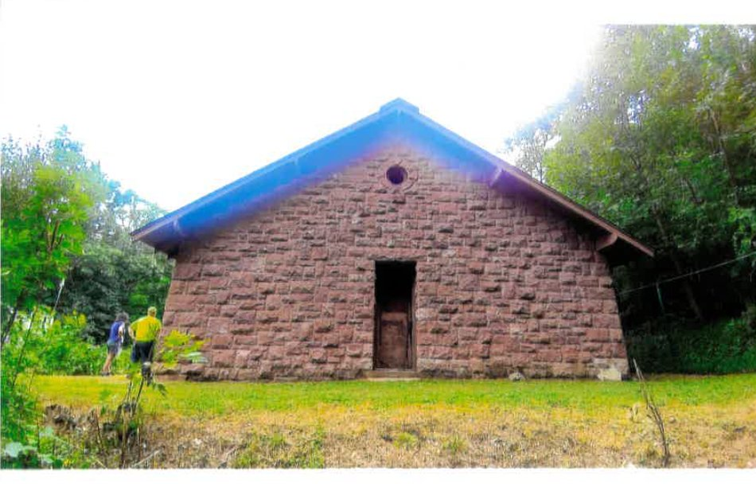
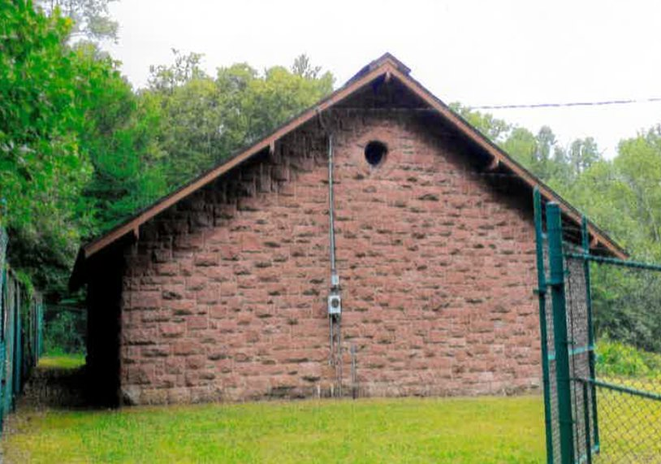
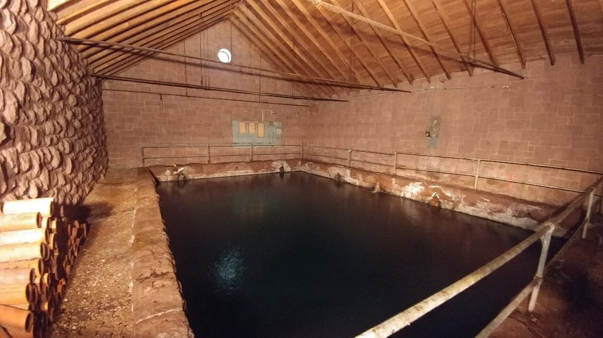
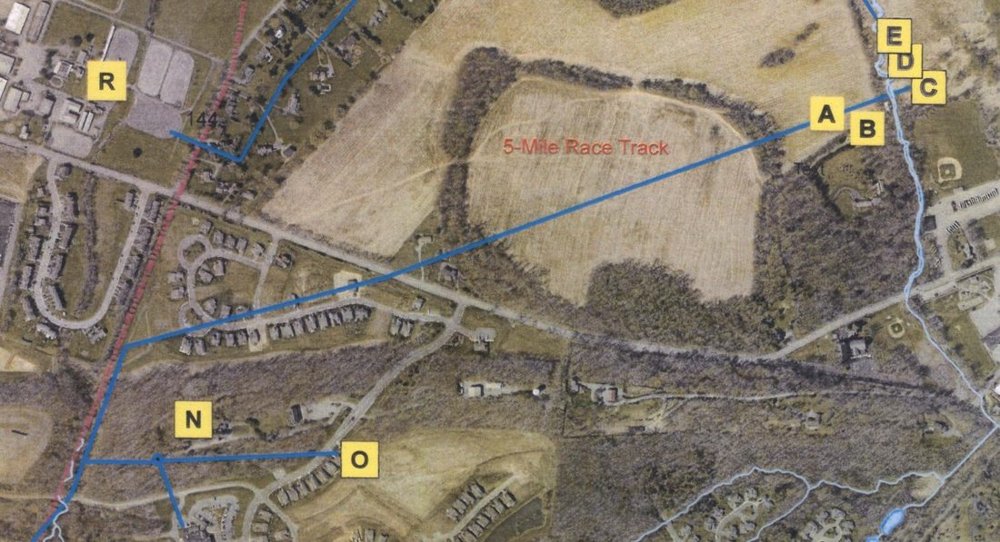
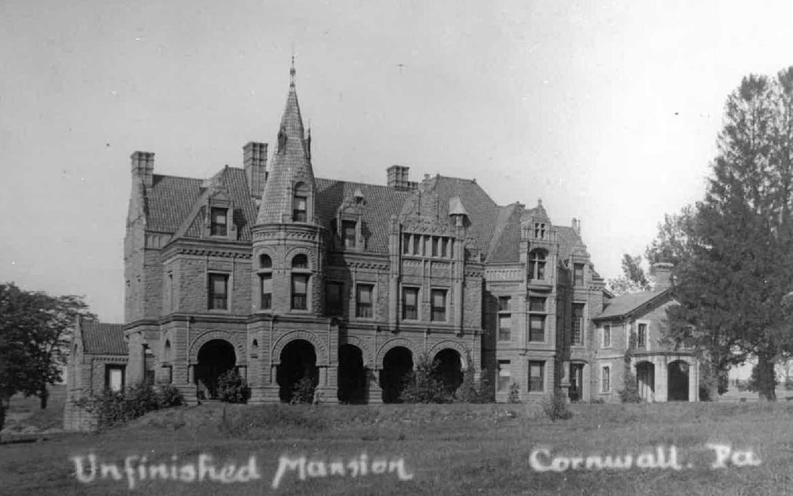

Admit it, these days when you need water you reach for the faucet with very little thought. In the old days when indoor plumbing was still more of a luxury, the supply of water required some planning. In 1879 newly married Robert H. Coleman was building an exquisite mansion in Cornwall center for his new bride. He literally went to great lengths to furnish it with running water. How did he do it?
At Coleman's request, civil engineer Henry Kendall reported on January 14, 1880 the results of a survey of springs in the wooded hills of Anne Coleman Alden's property known as Cold Springs (vicinity of Old Mine Road and Route 117 today). The survey had been conducted two months earlier in November 1879 in a period he described as "great drought." Even so, per his report the survey of three outlets provided a combined flow of 42,000 gallons per day.
From his Lebanon office at 927 Cumberland Street, Kendall described the vertical drop of 97 to 130 feet from the various springs to Coleman's mansion, over an estimated distance of 9,000 feet. He therefore proposed collecting the water in a basin 90 feet above the mansion and provided further details of the sizes of pipe needed. The run from the collection basin to the mansion would be served by a 4-inch pipe, providing 30 gallons per minute of flow.

Robert H. Coleman had married Lillie Clark on January 5, 1879. While they were spending a fair part of the year traveling and honeymooning in Thomasville, Georgia, he had his manager Artemus Wilhelm and architect Wm. B. Powell busy designing and building the new mansion. Affluence and luxury were perhaps not the only reason necessitating the project, as Lillie's frail health had been a growing concern for which reliable water might be considered more of a necessity.
Up until that time the family of Susan Ellen Coleman, with her son Robert and daughter Anne at "The Cottage" in Cornwall Center, had depended on water from Snitz Creek and a small spring house on the adjacent Smith farm. With the construction of a large extension to the Cottage two years earlier, and the construction of Robert H. Coleman's first mansion for his new bride, the expectation of piped, running water necessitated what became one of Cornwall's first water supplies. (The Cornwall Iron Master's mansion, now known as "Buckingham Mansion" at Cornwall Manor, had a similar piped water system from a small reservoir that had been established on the hills near Minersvillage.)

Given its surplus capacity, the Cold Springs water system would later expand to supply other houses in Cornwall over a few years' time. Included was the great Millwood mansion or "Alden Villa" built by Anne Coleman Alden in 1881 for her son Robert Percy Alden; the water main passing near the hill on which it still stands.
The curious part of the Cold Springs water supply is that it still flows today. At the time of its development, the wooded hills were relatively quiet, being used to harvest trees for the charcoal furnace. The Cornwall & Lebanon Railroad, and the extension that would lead to the birth of Mount Gretna did not exist. There were no National Guard encampments, no church Sunday school picnics. All of these have come and gone; the springs still flow.
Beehives
The springs were tapped at four locations; each capped with a small dome-like stone structure known as a beehive. These remain today, moss-covered and tucked away in the woods of Old Mine Road, continuing to collect spring water. Their approximate locations are indicated in Kendall's original 1880 pencil sketch.

The Reservoir
Initially the spring water had been collected in a shallow reservoir created by building an earthen dam. Later in the 1880s a Reservoir building was erected of familiar red sandstone, characteristic of many historic buildings in Cornwall. It remains today, serving essentially as a large cistern protected with walls and roof.
This structure, known now as "Cold Springs Reservoir" is registered as an historic site. An official with the Pennsylvania Department of Conservation remarked on its uniqueness; nothing else like it is known to exist in the state. This relatively hidden, though impressive structure houses a capacity of 50,400 gallons. As shown in the photo, the building contains a pool measuring 20x30 feet, 11.6 feet deep.



Expanding Growth in Cornwall
The attached aerial map tells the story of the growing demand for water (locations are approximate). The outlet from the reservoir was first piped to Robert H. Coleman's Cornwall property. It was initially intended to supply the new mansion at "A." The blue line from the lower left corner points back (southwest) to the reservoir. It crosses through a low cut in the ridge south of "Horseshoe Turnpike" (Freeman Drive / Rt. 419) and proceeds northeast to the Coleman estate.

Although work had begun early in 1880, plans quickly changed after Coleman's new bride succumbed to her illness and died in late May 1880 while they were traveling in Europe. Robert ordered a halt to construction and in fact completely dismantled what had been built. No definitive remains or photographs exist of this "first mansion."
In June and July of 1880 Wilhelm and Kendall exchanged correspondence regarding the order of an additional 2,000 feet of pipe and associated fittings. These were apparently to continue the work of extending the water supply to the other buildings of the estate, which are identified as: A — the 1st Mansion (unfinished), B — the Stables, C — "Cornwall Hall (both the original extended Cottage and the 2nd unfinished mansion)," D — the Music hall, E — the Greenhouse.
An October 19, 1887 article in the Lebanon Daily News reported that plumbers Matthews & Zerman of North Eighth Street, Lebanon finished laying a water main for Robert H. Coleman at his Cornwall mansion. "Pipe was laid a distance of almost a mile and was accomplished in the short space of four days." "Cornwall Hall" or the 2nd Mansion had begun construction several years after Robert had remarried in 1883. It too suffered from lack of completion as Robert was beginning to suffer financial problems, leading to his failure in 1893.

In spite of Coleman's difficulties, the demand for expanding the water supply resulted in continued growth of the Cold Springs system. Later developments included connecting the Alden "Millwood" mansion (N) and barn (O), and the water main grew northward from "E" to the Freeman property and other parts of Cornwall, even to the riding club at "R."
Over time Cold Springs gravity-fed water expanded service to locations throughout West Cornwall Township and Cornwall Borough. The Cold Springs property was deeded to the Cornwall Borough Water Authority in 1956 from the William C. Freeman, Jr. estate and was used as part of the Borough's water system until the mid-1990s. Although a more modern 250,000 gallon steel tank had been added in 1983 at the site of the reservoir, the system was rendered obsolete a decade later by updated state regulations. For the last 30 years, Cornwall has received its water from the City of Lebanon Authority (COLA) water system.
More surprising than its origins is the simple fact that the integrity of this historic water system remains in place today. More than 140 years after its construction, the building continues to serve its original purpose — daily collecting 50,000 gallons of spring water, fed continually from its network of unassuming beehives. Given the economic circumstances of our times, the water is no longer used to serve the population of a growing community, but simply runs off to a local creek.
Credit: Photos and information supplied by Barbara Henry, Executive Director of Cornwall Borough's Water & Sewer Department.
Originally published on LebTown, February 1, 2023.